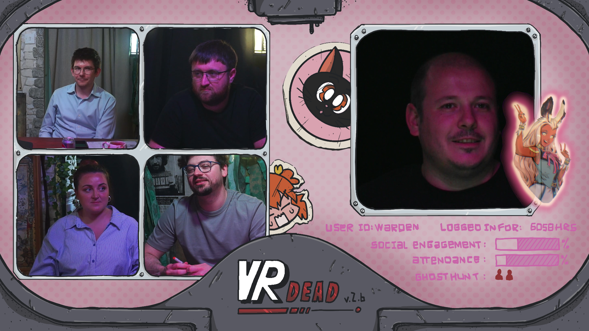
VR Dead: Episode 1
The first signal is never the last problem.
Science fiction horror
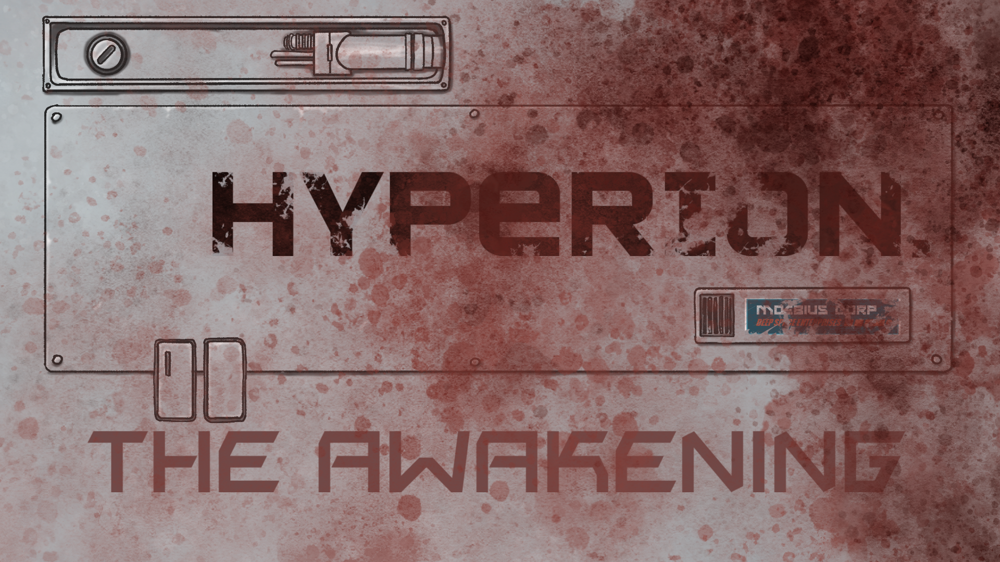
Mothership is a fast, accessible science-fiction horror roleplaying game from Tuesday Knight Games, built around tense decisions, fragile survival, and stories that can go wrong quickly. Its easy-to-adopt rules and welcoming community of modules make it simple to bring new horrors, strange locations, and original adventures to the table. VR Dead brings our crew into the cold corridors of survival horror.
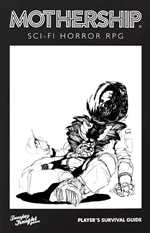
Live-play schedule dates are listed on the main page.
Series one
VR Dead is a 2-3 session Mothership adventure aboard Mergen's Watch, a deep-space astronomy station built around experimental virtual-reality technology. After an alien entity traps the crew in a digital paradise, they awaken to a derelict station, failing systems, and a virtual overlord determined to pull them back in. To survive, they must move between the virtual and real worlds before the station collapses and their bodies, memories, and minds are lost.
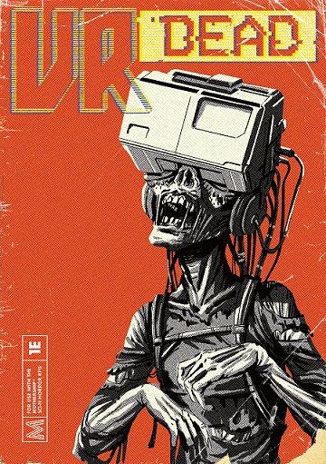
 Sam
Sam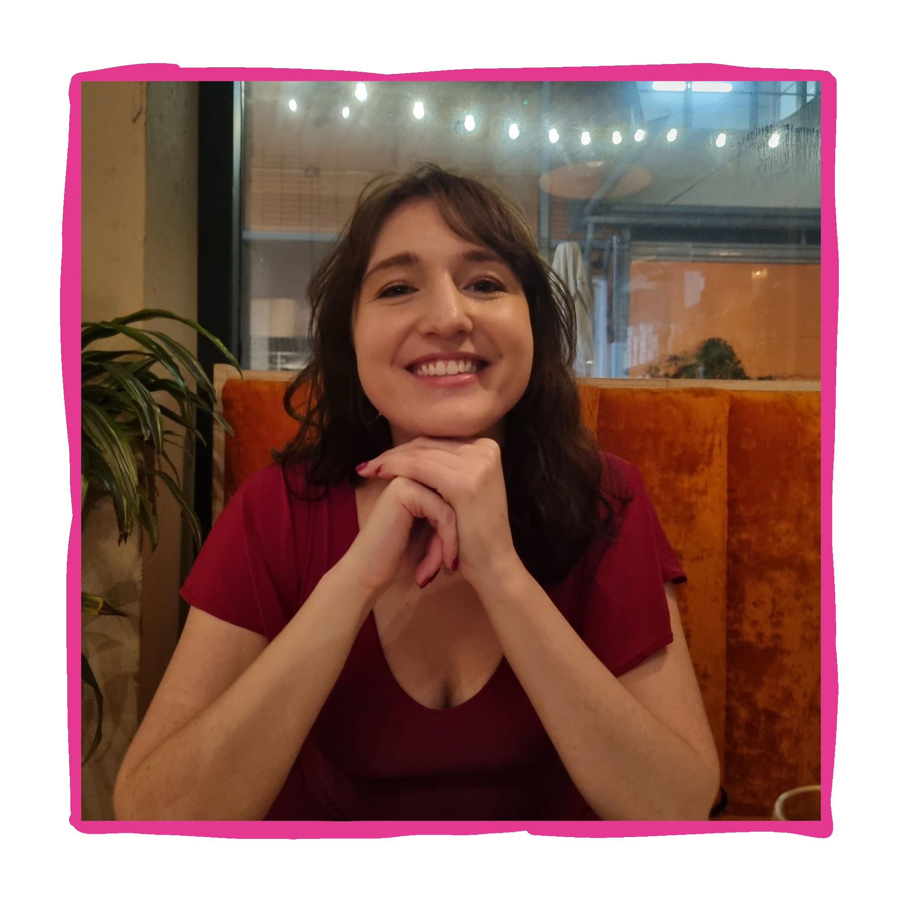
Katie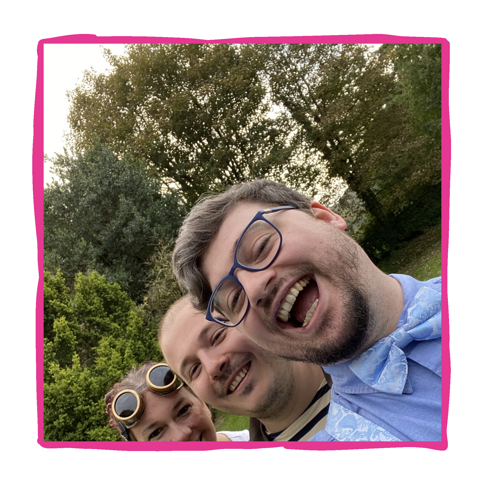
Josh SimonWarden
SimonWarden
The first signal is never the last problem.
The story continues.
Series one
Hyperion is a three-part trilogy: Arrival, Revival, and Awakening. Written by theRolePlayGoblin team. Each story follows a different crew, at a different point in time, as they encounter the Moebius Corporation science vessel Hyperion. Every crew faces its own space-horror nightmare aboard the ship, but only by experiencing all three stories will the fearful truth be revealed - a revelation that could determine the survival of humanity.
SamWardenSimonWarden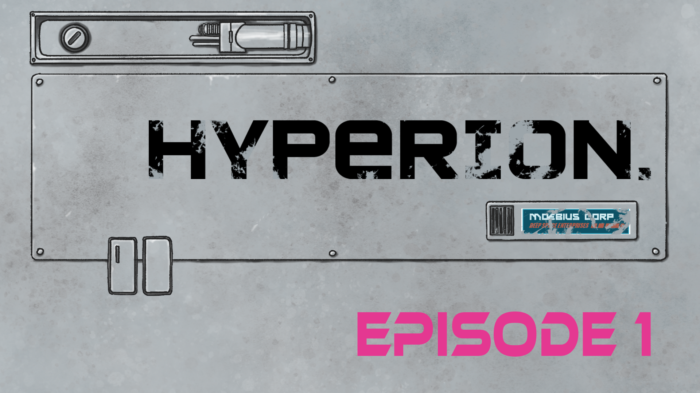
The first signal is never the last problem.
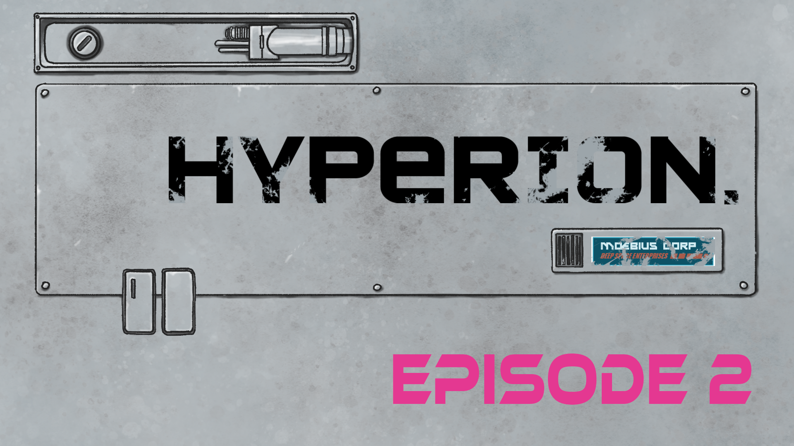
The story continues.
The first signal is never the last problem.
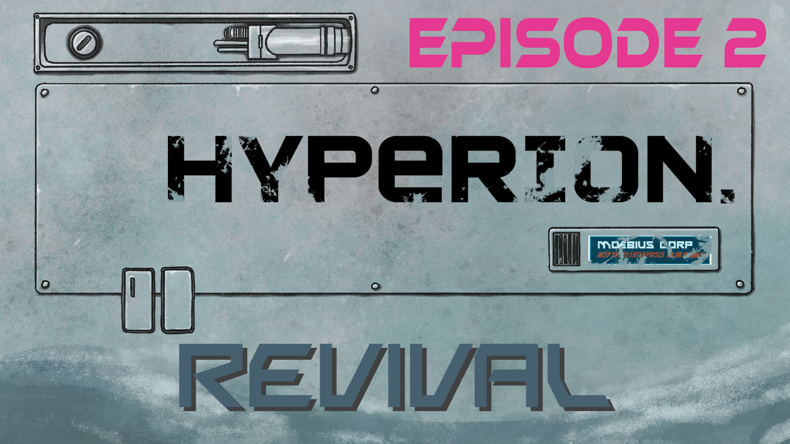
The story continues.
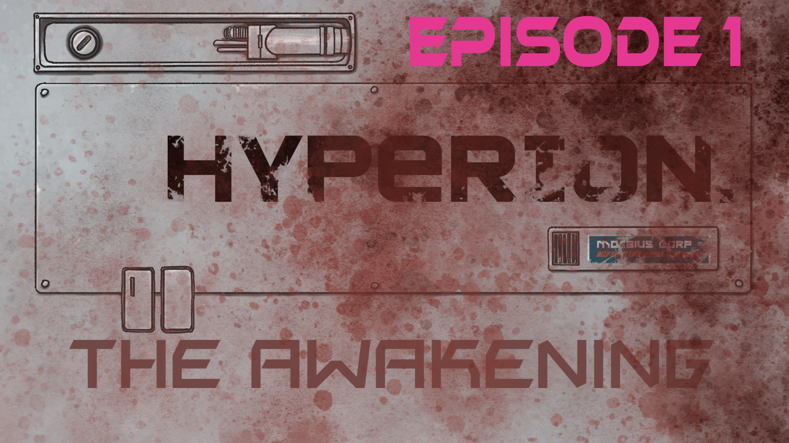
The first signal is never the last problem.
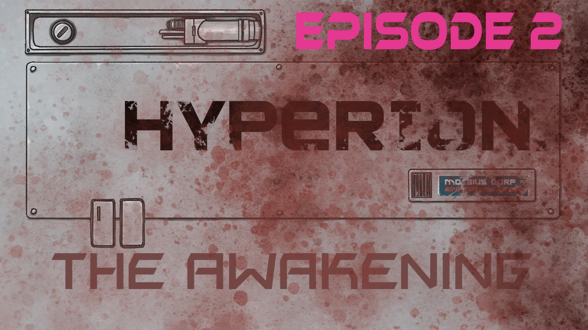
The story continues.